São doze pares de nervos cranianos, dez pares estão ligados ao tronco encefálico.
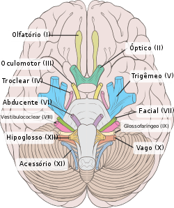
São numerados em algarismos romanos, de acordo com sua emergência no sistema nervoso.
O Iº e o IIº nervos cranianos se conectam ao telencéfalo e ao diencéfalo respectivamente. Os demais se conectam com o tronco encefálico.
Os nervos cranianos podem ser exclusivamente sensitivos ou motores.
Alguns nervos cranianos são mistos e, quatro pares possuem componente autônomo parassimpático (nervos: oculomotor, facial, glossofarígeo e vago).
Abaixo estudaremos os nervos cranianos com suas funções e origens:
Sua origem real (local onde está localizado seu núcleo);
Origem aparente (local onde suas fibras aparecem no sistema nervoso / tronco encefálico);
Origem óssea (forames do crânio por quais passam os nervos cranianos).
É o primeiro par de nervo craniano. O nervo olfatório é um nervo sensitivo (olfato).
Tem início na mucosa olfatória, localizada no terço superior da cavidade nasal.
É formado por neurônios bipolares, os axônios não mielinizados das células bipolares na mucosa olfatória fundem-se em cerca 20 filamentos, cujo prolongamento periférico se estende para a mucosa, enquanto que o prolongamento central atravessa a lâmina cribriforme do osso etmóide, penetrando na fossa anterior do crânio.
Esses axônios fazem sinapse com células mitrais que formam os bulbos olfatórios.
Os axônios das células mitrais se projetam formando os tratos olfatórios, que após um curto trajeto se dividem em duas estrias olfatórias: medial e lateral.
A estria olfatória lateral envia os estímulos para o únco e giro parahipocampal.
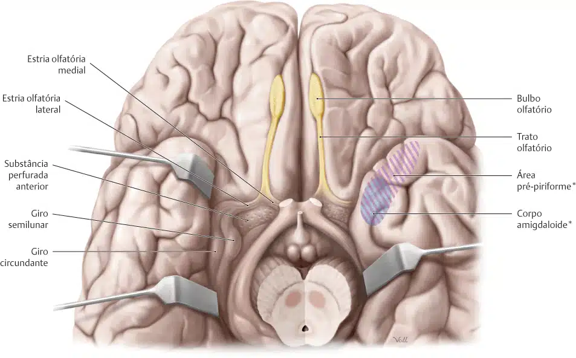
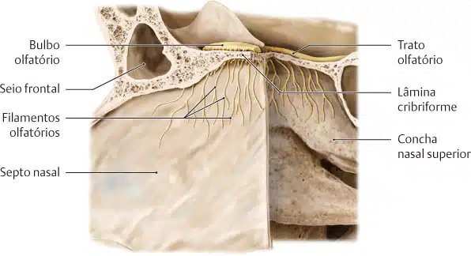
O segundo par de nervo craniano. O nervo óptico é sensitivo e está envolvido com a visão.
Origina-se nas células ganglionares da retina.
Os axônios dessas células atravessam o canal óptico, alcançando a fossa média do crânio.
As fibras do nervo óptico sofrem cruzamento parcial, formando o quiasma óptico (estrutura pertencente ao hipotálamo).
As fibras provenientes da parte nasal da retina cruzam no quiasma óptico para o lado oposto, enquanto que as fibras da parte temporal da retina permanecem do mesmo lado.
Após o cruzamento das fibras no quiasma óptico, forma-se o trato óptico, que contém fibras cruzadas do olho contralateral (fibras da parte nasal da retina), e fibras não cruzadas do olho ipsilateral (fibras da parte temporal da retina).
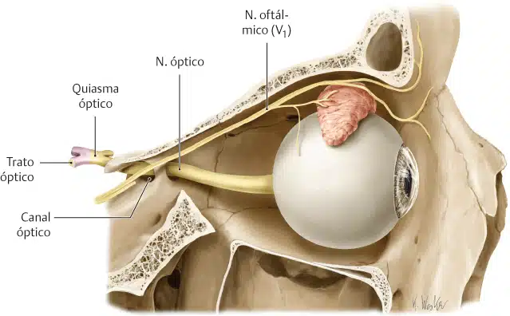
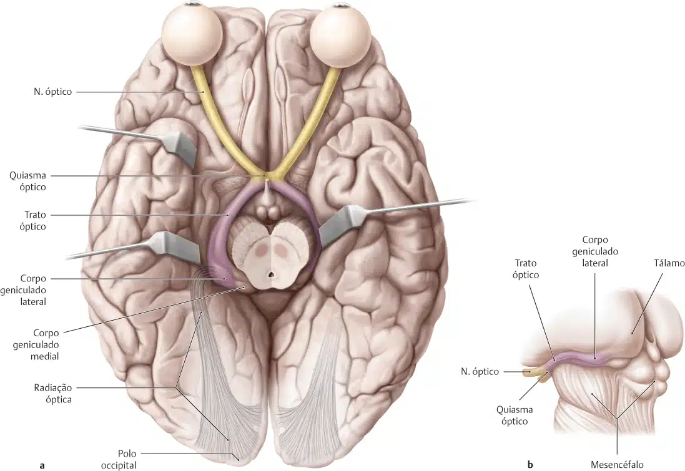
O terceiro par de nervo craniano.
O nervo oculomotor contém fibras pré-ganglionares parassimpáticas.
É um nervo motor, que realiza a maior parte da inervação dos músculos extra-oculares.
Possui dois núcleos no mesencéfalo (um somático e outro visceral).
O nervo oculomotor alcança a orbita após atravessar a fissura orbitária superior.
Inerva os músculos: levantador da pálpebra, reto inferior, reto superior, reto medial e obliquo inferior.
Envia fibras autônomas parassimpáticas para a inervação do músculo ciliar (realiza acomodação visual) e o músculo esfincter da pupila (miose = constrição da pupila).
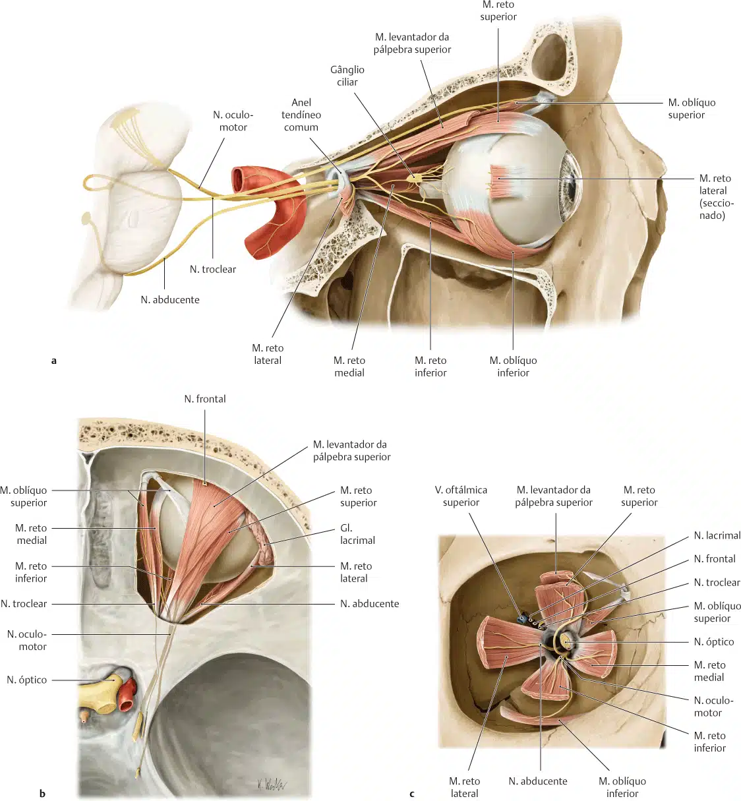
O quarto par de nervo craniano, o único a ter origem posterior no tronco encefálico.
É um nervo motor, que controla o músculo oblíquo superior.
O quinto par de nervo craniano.
É um nervo misto, com uma pequena parte motora e uma grande parte sensitiva (conectada com o gânglio do trigêmeo).
Possui três raízes, cada uma formando os nervos: ofltálmico (primeira divisão do trigêmeo V1), maxilar (segunda divisão do trigêmeo V2) e mandibular (terceira divisão do trigêmeo V3).
Todas as divisões são sensitivas; exceto a V3 que é mista (motora e sensitiva).
O n. trigêmeo é responsável pelas sensibilidades geral e proprioceptiva da cabeça, cavidades nasal e oral e, inervação dos músculos da mastigação (m. masseter, m. temporal, m. pterigóideo lateral e m. pterigóideo medial), e ventre anterior do músculo digástrico.
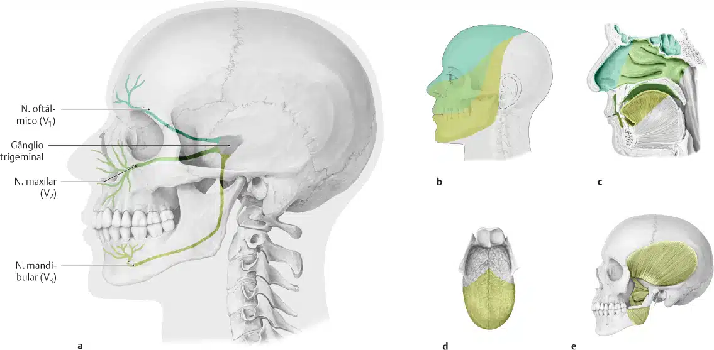
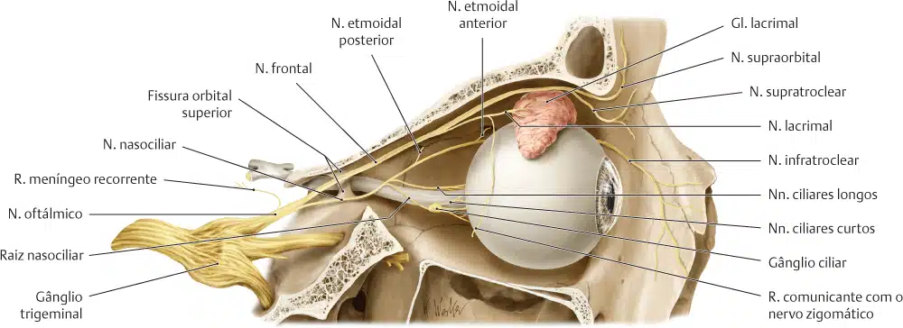
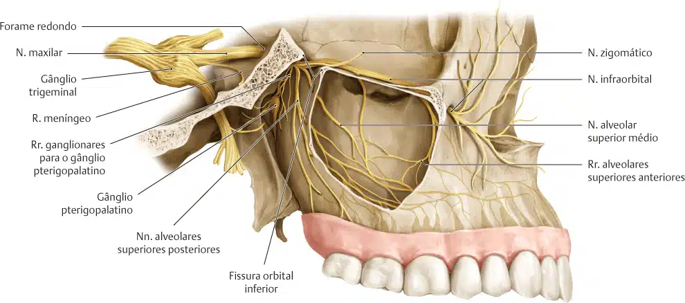
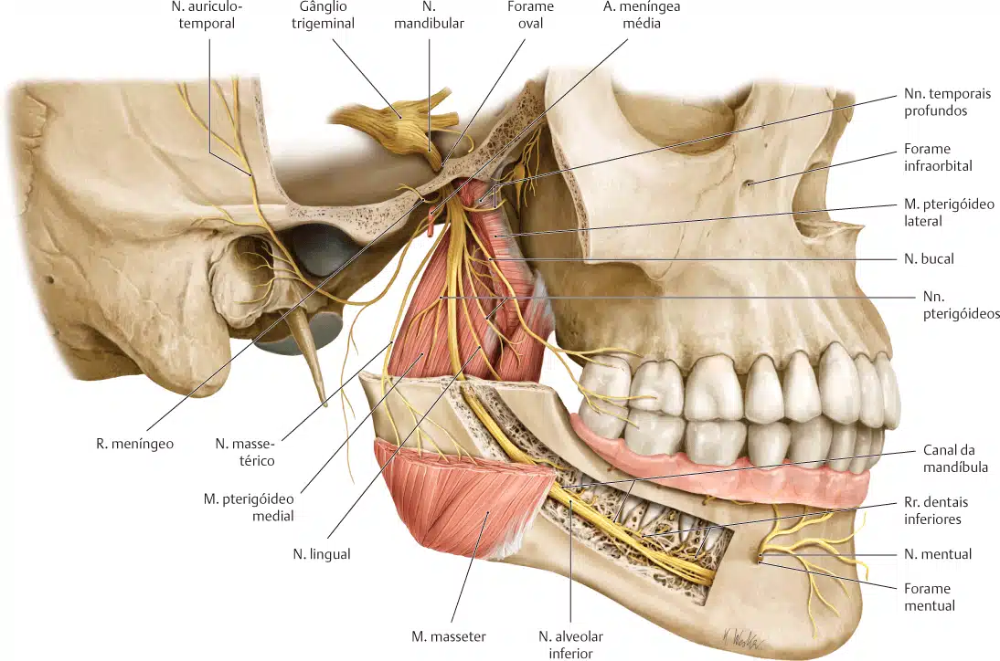
O sexto par de nervo craniano.
É um nervo motor, que supre o músculo reto lateral do olho, responsável pela abdução do olho (desvio lateral).
O nervo abducente em seu trajeto intra-craniano, passa no interior do seio cavernoso.
O sétimo par de nervo craniano.
É um nervo misto, contendo fibras pré-ganglionares parassimpáticas.
O n. facial contém uma grande raiz motora e uma pequena raiz sensitiva (denominada n. intermédio).
O n. facial entra no meato acústico interno (junto do n. vestibulococlear), atravessa a parede posterior da cavidade timpânica (orelha média), local onde emite um ramo denominado n. corda do tímpano (que se liga ao nervo lingual do trigêmeo), suprindo os dois terços anteriores da língua (inervação gustativa).
O n. facial deixa o crânio pelo forame estilomastóideo, emite ramos para os músculos estilo-hióideo e o ventre posterior do músculo digástrico.
Atravessa o parênquima da glândula parótida (sem inervá-la), e na margem anterior dessa glândula se divide em cinco ramos terminais, que se distribuem para os músculos da expressão facial (incluindo o m. platisma do pescoço).
Os ramos terminais são: temporais, zigomáticos, bucais, marginal da mandíbula e cervical.
O nervo facial apresenta componentes autônomos parassimpáticos que suprem as glândulas submandibulares, sublinguais e lacrimais.
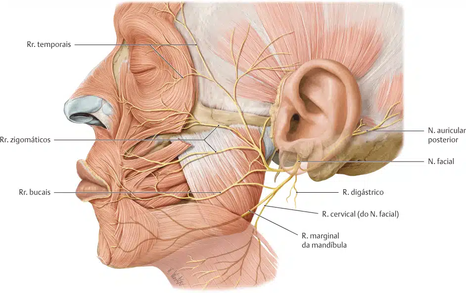
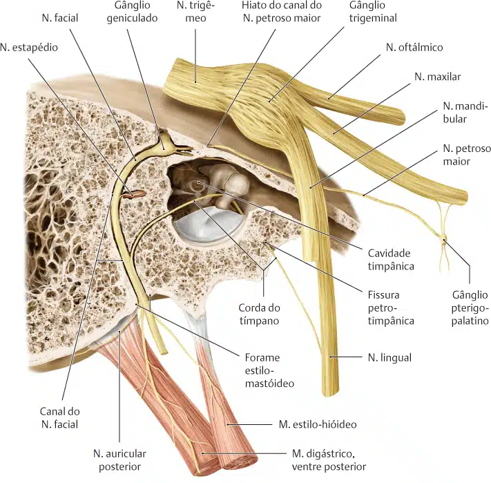
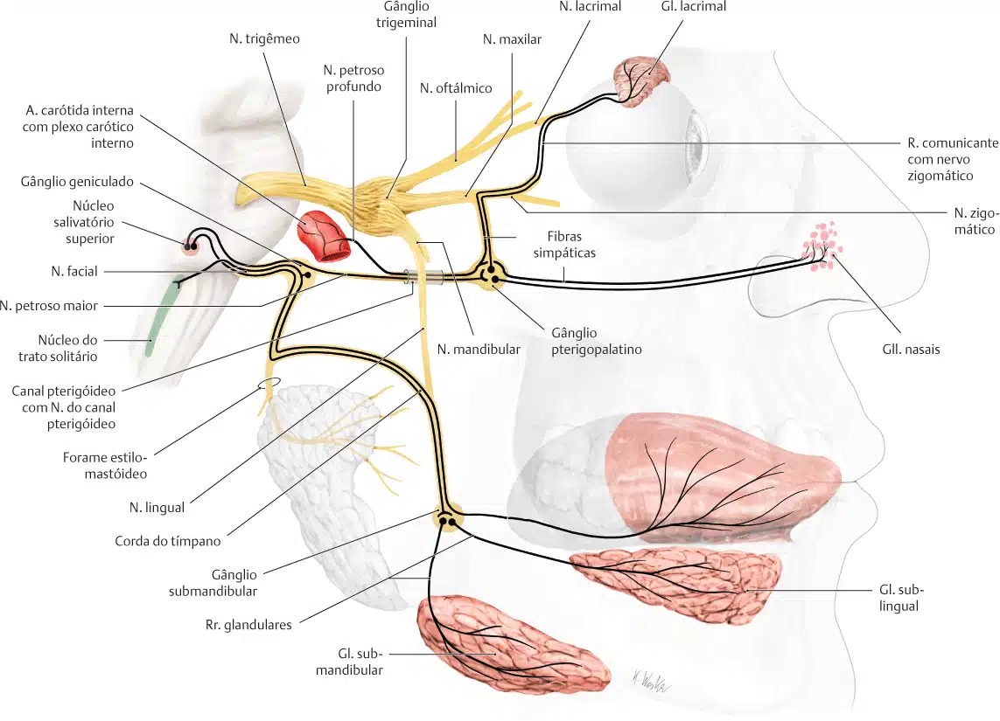
O oitavo par de nervo craniano.
É um nervo sensitivo, formado pelos nervos: vestibular e coclear.
Suas fibras se originam da orelha interna nas cristas ampulares do vestíbulo (n. vestibular), e no ducto coclear (n. coclear).
Atravessam o meato acústico interno (junto do n. facial).
Este nervo está relacionado com o equilíbrio (posição e manutenção da cabeça em relação ao tronco) e a audição.
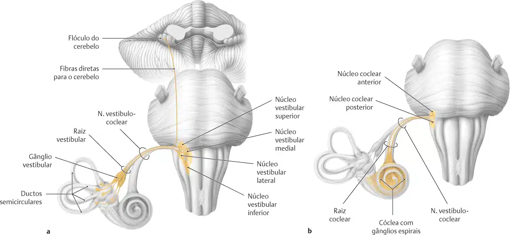
O nono par de nervo craniano.
É um nervo misto.
Sua parte sensitiva recebe informações provenientes do terço posterior da língua, úvula, faringe.
Inerva os músculos estilofaríngo e o constritor superior da faringe.
Apresenta inervação especial para a língua (gustação do 1/3 posterior), e componente autônomo parassimpático, inervando a glândula parótida.
O nervo glossofaríngeo emerge do sulco póstero-lateral do bulbo, atravessa o forame jugular (junto aos nervos vago e acessório, e a veia jugular interna).
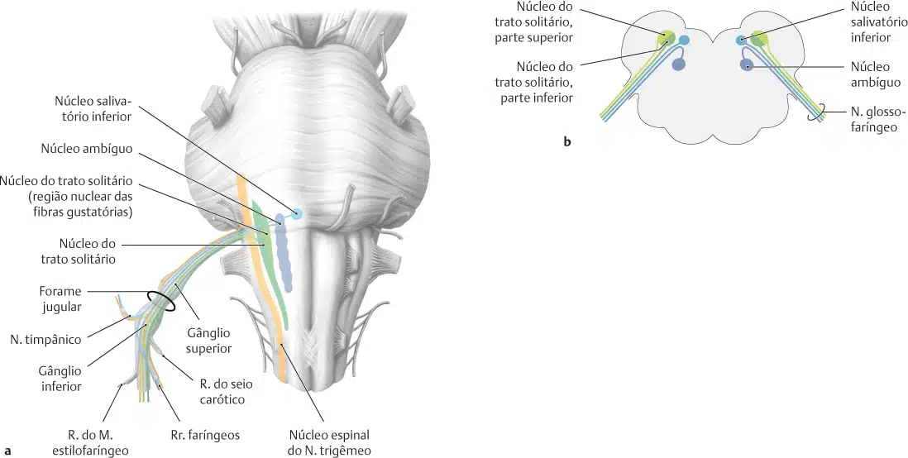
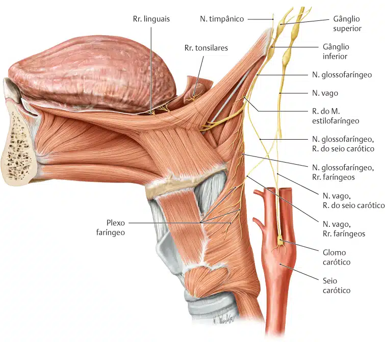
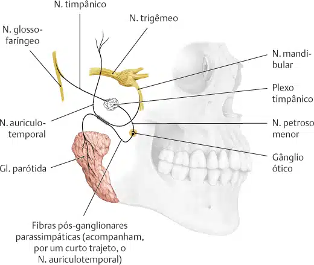
Do latim vagus (que vaga / sem residência fixa).
É o décimo par de nervo craniano.
O nervo vago era denominado de pneumogástrico, por seu trajeto pelas regiões torácica e abdominal.
O nervo vago é um nervo misto, o maior nervo craniano e parassimpático do corpo.
Sua origem é na fossa rombóide, no trígono do nervo vago (local do seu núcleo).
Emerge no sulco póstero-lateral do bulbo e deixa a cavidade craniana pelo forame jugular.
Desce no pescoço posteriormente a veia jugular interna.
Cruza anteriormente a artéria subclávia (medialmente ao nervo frênico).
Atravessa a cavidade torácica, posteriormente ao hilo do pulmão.
Distribui-se na cavidade abdominal até a flexura esquerda do colo.
Inerva (estímulos parassimpáticos) as vísceras do pescoço, tórax e abdome (até o final do colo transverso).
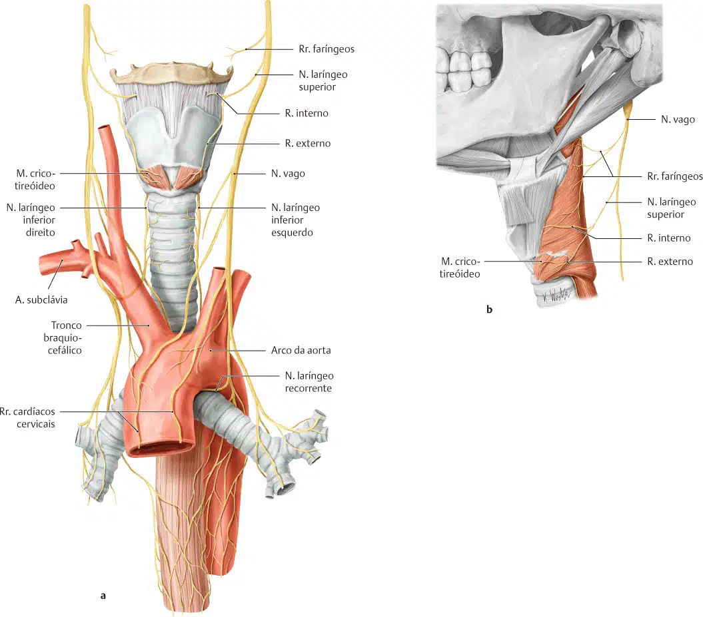
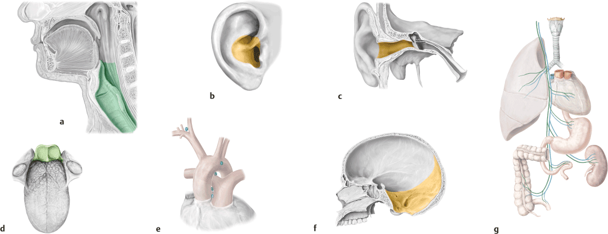
É o décimo primeiro par de nervo craniano.
É um nervo motor, com duas raízes (uma bulbar, outra espinal).
A origem da raiz espinal do nervo acessório é proveniente da coluna anterior da medula espinal (dos cinco primeiros segmentos medulares).
Essa raiz ascende em direção ao forame magno, entrando na cavidade craniana e, une-se com a raiz bulbar.
Juntas, as raízes deixam a cavidade craniana por meio do forame jugular.
No pescoço o nervo acessório está localizado profundamente ao músculo esternocleidomastóideo, seguindo o trajeto sobre o músculo levantador da escápula.
Supre os músculos esternocleidomastóideo e trapézio.
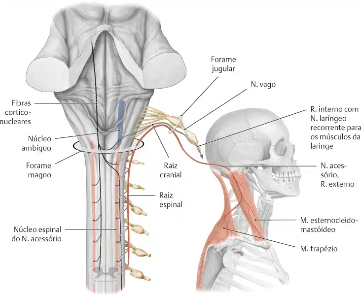
Do grego hypo – abaixo; glossa – língua.
É o décimo segundo par de nervo craniano.
É um nervo motor, suprindo os músculos da língua.
Origina-se do núcleo do nervo hipoglosso, localizado no trígono do nervo hipoglosso (no bulbo).
Atravessa o canal do nervo hipoglosso.
Envia fibras nervosas que se comunicam com a alça cervical.
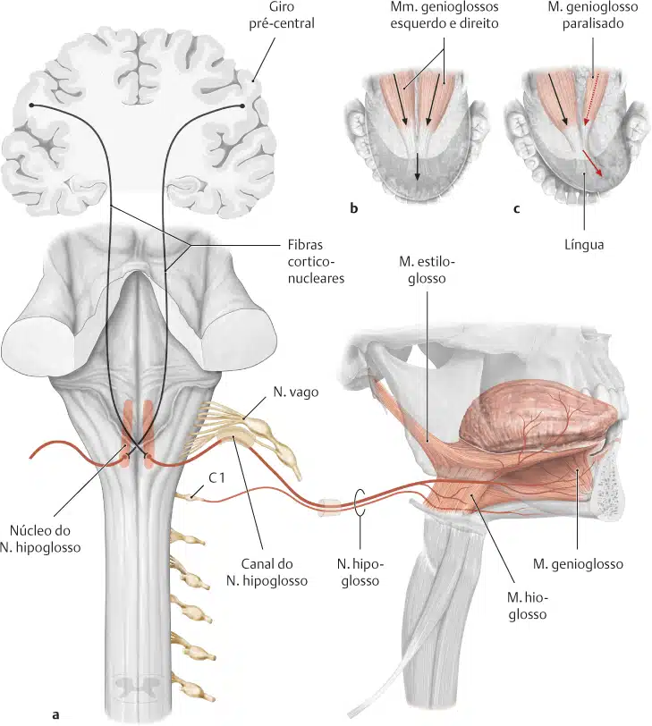